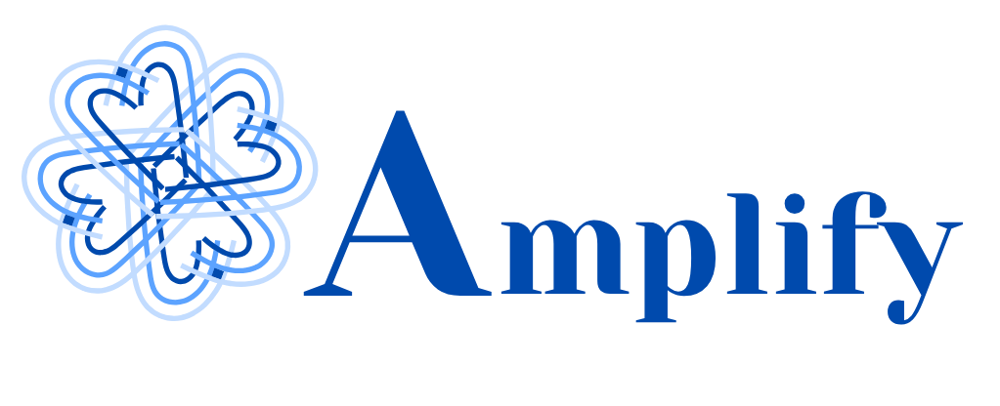

This page explains the conditions for participating in the AMPLIFY volunteer programme. By submitting the volunteer form, you confirm that you have read, understood, and accepted these terms.
This programme is a volunteer campaign and not a job application. It does not provide direct financial compensation, salary, or employment benefits. Participation is offered on a voluntary basis.
I commit to treat all participants, organisers, facilitators, and stakeholders with respect and courtesy, regardless of their background, identity, opinions, or beliefs.
I agree to follow the guidelines, instructions, and deadlines provided by the organisers and facilitators. I will contribute positively to the overall experience of participants and the volunteer team.
I accept full responsibility for my actions and understand that any behaviour that violates these terms may result in my removal from the programme.
The certificate of participation is conditional. It will be awarded only after I meet the programme requirements, complete the assigned tasks, attend mandatory onboarding and follow-up sessions, and demonstrate active engagement throughout the campaign.
By submitting the volunteer form, I consent to my personal data being stored and used for volunteer coordination, group communication, onboarding, and certificate issuance. My data will only be shared with the volunteer coordination team and other staff responsible for the campaign.
If I am under 16 years old, I understand that guardian permission is required. I will provide guardian contact details if requested for protection and safety reasons.
I understand that I may be asked to choose a suitable department or area of contribution based on my skills and availability. Departments may include communications, on-ground operations, outreach, digital support, participant care, and content creation.
By confirming this form, I acknowledge that I have read these terms and agree to abide by them throughout the volunteer programme.